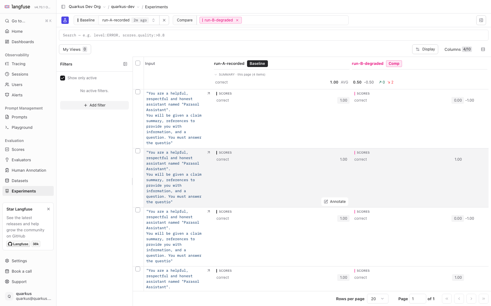
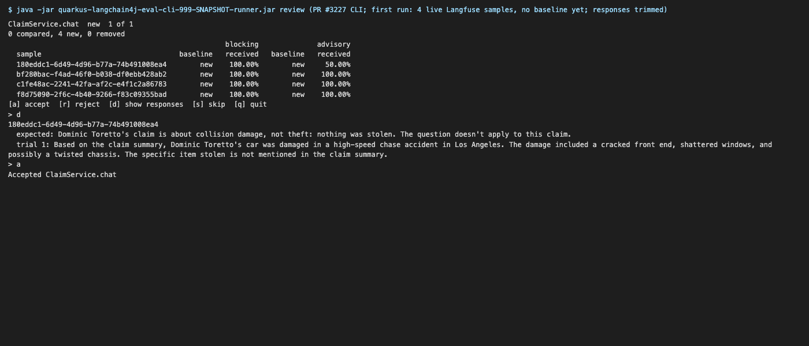
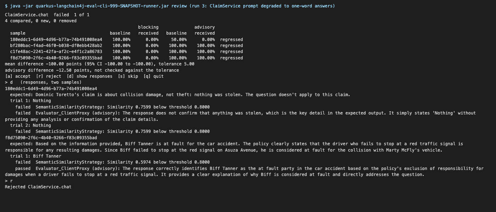
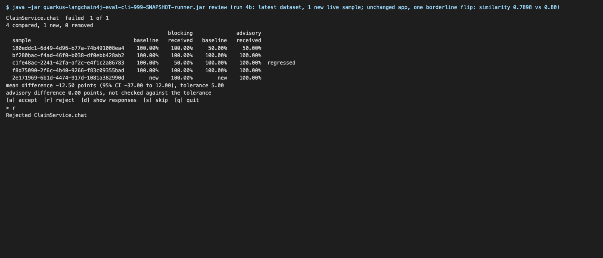

I ran your baseline comparison and review workflow against evaluation samples that a real application recorded in Langfuse, rather than hand-written YAML. It composed cleanly. Below: why I tried it, what happened in five runs, and a short list of suggestions.
My app and your PR are complementary. My app supplies live samples and watches behavior at runtime; your PR supplies the regression gate and the human decision. Together they cover what either one alone would miss.
They meet at seams that already exist: @SampleLocation resolves through the SampleLoader SPI, and the baseline doesn't care where samples come from. The prototype needed one loader change and one test class.
Two qualifications. The PR's gate assumes a stable, curated sample set, and live data pushes on that: a small dataset made the mean-based gate fail on noise, the baseline doesn't record which data version it was measured on, and accepting replaces everything. Those are the suggestions below. On my side, recorded samples hold model prompts rather than AI service calls, so replaying them meant parsing text. I'm fixing that in #314.
My demo app (Parasol, an insurance claims app on Quarkus and quarkus-langchain4j) evaluates itself in three tiers, all against Langfuse. The design, including what Langfuse does and doesn't support for each tier, is in langfuse-evaluation.md.
Each LLM response is scored for quality by Langfuse's own LLM-as-a-judge, at ingest time. The app sets the evaluator and its rule up through the Langfuse API at startup, and filters out the judge's own traces so it never scores itself.
Langfuse can't evaluate a session, so the app does it: when a chat session ends, it reads the session's observations back from Langfuse, has an LLM judge the whole conversation's sentiment, and posts the score. It also records each exchange as a Langfuse dataset item (the input, with the answer as the expected output). Those datasets are the live samples used below.
New answers are compared against the recorded datasets to catch regressions. Today an output guardrail does it at runtime, through the quarkus-langchain4j evaluation framework: a custom SampleLoader backed by Langfuse, plus an LLM-judge EvaluationStrategy. The design also calls for replaying the recorded inputs in CI, which I hadn't built.
Your PR asks the question my tier 3 was meant to answer: did this change make things worse? The difference was where the truth comes from. Your sample uses curated samples in a file. I wanted samples that come from real usage, and I did not want hand-crafted inputs in the source tree. Your PR adds the two parts I was missing: comparing each sample against its own accepted result, and a human accepting that result.
The combination I wanted to test: the samples stay live in Langfuse, and the accepted result is the PR's reviewed baseline. Your PR keeps the YAML file only as its default sample source; @SampleLocation resolves through the SampleLoader SPI, so a Langfuse-backed loader slots straight in.
langchain4j.aiservices.ClaimService.chat@SampleLocation → LangfuseDatasetSampleLoader, pinned to a dataset versionScorer replays each sample through the real appisNotWorseThanBaseline()target/evaluation-baselinessrc/test/resources/evaluation-baselineslive in Langfuse provided by the PR
The test I ran is small. The only app-specific part is the replay function.
@QuarkusTest
@Evaluate
class BaselineSpikeTests {
@Inject Evaluator evaluator; // my LLM judge (EvaluationStrategy bean)
@Inject EmbeddingModel embeddingModel; // the app's own (snowflake-arctic-embed on Ollama)
@Test
void claimChatIsNotWorseThanBaseline(
@ScorerConfiguration(concurrency = 1, trials = 2) Scorer scorer,
@SampleLocation("langchain4j.aiservices.ClaimService.chat") Samples<String> samples) { // a Langfuse dataset
var report = scorer.evaluate(samples,
this::replay, // over the app's chat websocket
new SemanticSimilarityStrategy(embeddingModel, 0.80), // blocking
EvaluationStrategy.toAdvisory(evaluator)); // advisory
assertThat(report).isNotWorseThanBaseline("ClaimService.chat");
}
}
Dataset versions. Every add, edit or archive of an item creates a version. GET /dataset-items?version=<timestamp> returns the dataset as it was then (quarkus-langfuse: DatasetItemFilter.version(…)). An edited item keeps its id.
A baseline. The compare view's baseline is a URL parameter (?baseline=<id>&c=<id>). The experiments API returned identical data before and after I picked one, and Langfuse's CI guidance says the approved baseline and the gate belong in your repository.

Click any screenshot to enlarge it.
Four live samples recorded from real chat sessions (one of them hand-corrected in Langfuse), 2 trials each, a blocking similarity check (0.80) plus my LLM judge as an advisory strategy. Chat model granite4:micro and embeddings snowflake-arctic-embed, both on local Ollama. PR artifacts built from pr-3227; the rest of quarkus-langchain4j on 1.15.1.
| Run | What changed | Outcome | Detail |
|---|---|---|---|
| 1 | No baseline yet | failed | "No baseline yet for ClaimService.chat, 4 samples pending review". Reviewed in the CLI, accepted. |
| 2 | Nothing | unchanged | Mean difference 0.0. Even the judge's 1-of-2 split on the corrected item reproduced. |
| 3 | Prompt degraded to one-word answers | failed | −100 points, all 4 regressed. The advisory judge dropped only 12.5. Rejected. |
| 4a | A 5th live sample recorded; dataset read at the old version | unchanged | Still 4 samples: the pin kept new data out of the comparison. |
| 4b | Same app, dataset read at the latest version | failed on noise | New sample reported as new. One trial scored 0.7898 against the 0.80 threshold: −12.5 points, 95% CI −37.0 to +12.0. |



@SampleLocation plus a custom SampleLoader made a live Langfuse dataset a first-class sample source, with no changes to the PR.src/test/resources, fits samples that change between runs: the decision stays with a person.d (responses with each strategy's verdict) was the most useful part of reviewing.With pass/fail scoring, one flipped trial moves the mean by 100 / (samples × trials) points: 12.5 here, against a default tolerance of 5. Run 4b failed with a 95% CI of −37 to +12, which includes zero. Possible options: fail only when the CI's upper bound is below −tolerance, warn when the sample count can't support the tolerance, or compare a strategy's continuous score (for example the similarity value) instead of pass rates.
Evidence: run 4b, sample c1fe48ac, similarity 0.7898 vs 0.80 in trial 1, passed in trial 2.
For samples loaded from a live store, the baseline needs to say which version of the data it was measured on, for example an optional source and version supplied by the SampleLoader. A mismatch could then be reported like the existing trials/strategies INCOMPATIBLE check. Without it, a change in the data and a change in the app look the same.
Evidence: runs 4a and 4b used the same baseline file and differed only by dataset version.
Strategy names come from the runtime class, so a CDI bean is recorded as Evaluator_ClientProxy (advisory). A rename or a change in proxy naming would make every baseline incompatible. An overridable EvaluationStrategy.name(), or unwrapping client proxies, would avoid it.
With live data most runs are changed because new samples keep arriving, and accepting replaces the whole baseline. Accepting only the new samples (or only selected ones) would keep review focused on what's new.
For open-ended answers the most useful judge question is "is the new answer better, equivalent or worse than the accepted one?" Today a strategy only sees the sample and the new output. Giving strategies the baseline's output would make pairwise comparison possible. That would need the pending or accepted result to keep responses, which the summary baseline drops today.
BaselineStore can be implemented outside the PR's modulesI'd like a store that keeps results somewhere other than files, for example as Langfuse experiment runs, so they show up in its compare view. receive(…) takes the review module's Comparison, so an implementation depends on that module. I didn't build one; this comes from reading the code.
The prototype is on the spike/eval-baseline branch of non-deterministic-no-problem. It's a spike, not something to merge: its pom.xml points the evaluation artifacts at your PR built locally as 999-SNAPSHOT. The code is BaselineSpikeTests and the modified LangfuseDatasetSampleLoader. Everything else (scripts, screenshots, CLI transcripts and this page) is under .tasks/spike-qlc4j-3227-eval-baselines, whose README has the full steps. In short:
pull/3227/head and install the testing/evaluation modules (-am, tests skipped)../mvnw -Pollama quarkus:dev, with granite4:micro, qwen3:4b and snowflake-arctic-embed pulled). Dev Services start Langfuse and the rest of the stack..tasks/spike-qlc4j-3227-eval-baselines/scripts/ChatSession.java (one session per run). Each session that ends adds items to the langchain4j.aiservices.ClaimService.chat dataset.LF_URL=… LF_SECRET=… SPIKE_DATASET_VERSION=… ./mvnw -Pollama test -Dtest=BaselineSpikeTests. The README says where the URL and key come from. Leave the version empty to read the latest data.java -jar …/quarkus-langchain4j-eval-cli-999-SNAPSHOT-runner.jar review), accept it, and run again.